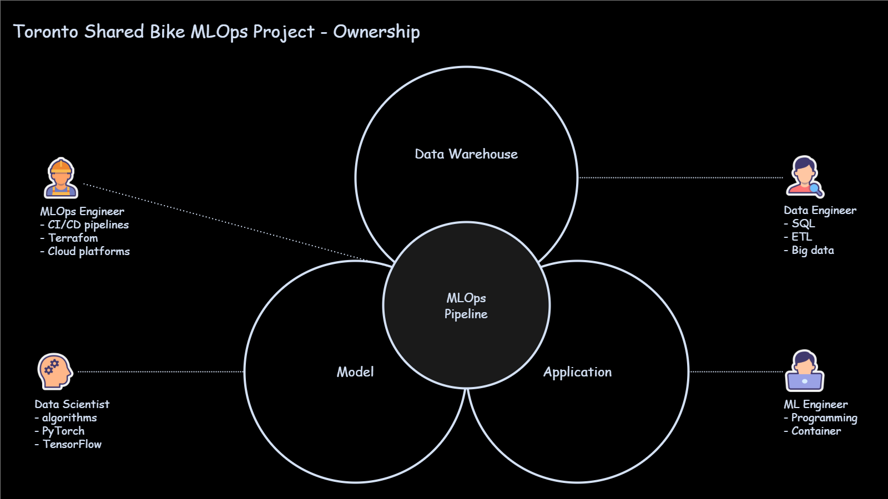

End-to-end MLOps workflow
A project demonstrating an end-to-end MLOps workflow by training, deploying, and serving a bike-demand forecasting model.
Machine learning turns historical data into insights for faster, data-driven decisions.
Integrating machine learning models reliably into business applications remains a significant challenge.
This project demonstrates an end-to-end MLOps workflow by training, deploying, and serving a bike-demand forecasting model.
The deployed model, served from AWS Lambda behind API Gateway. Pick a station, a date, and an hour.
Your forecast will appear here.
Predict hourly bike rentals at the 73 busiest stations for annual members, whose demand is driven primarily by predictable weekday commuting patterns.
Deployment is automated with GitHub Actions workflows, triggered when
code is updated or a model training job completes.
The trained model is served on AWS:
Lambda for serverless inference
API Gateway as the entry point
S3 for the frontend
CloudFront for caching
Cloudflare for DNS
A successful ML application requires clear ownership across multiple roles:
Clear ownership improves delivery, while MLOps connects each component into a reliable, repeatable production system.

Ownership across the ML lifecycle